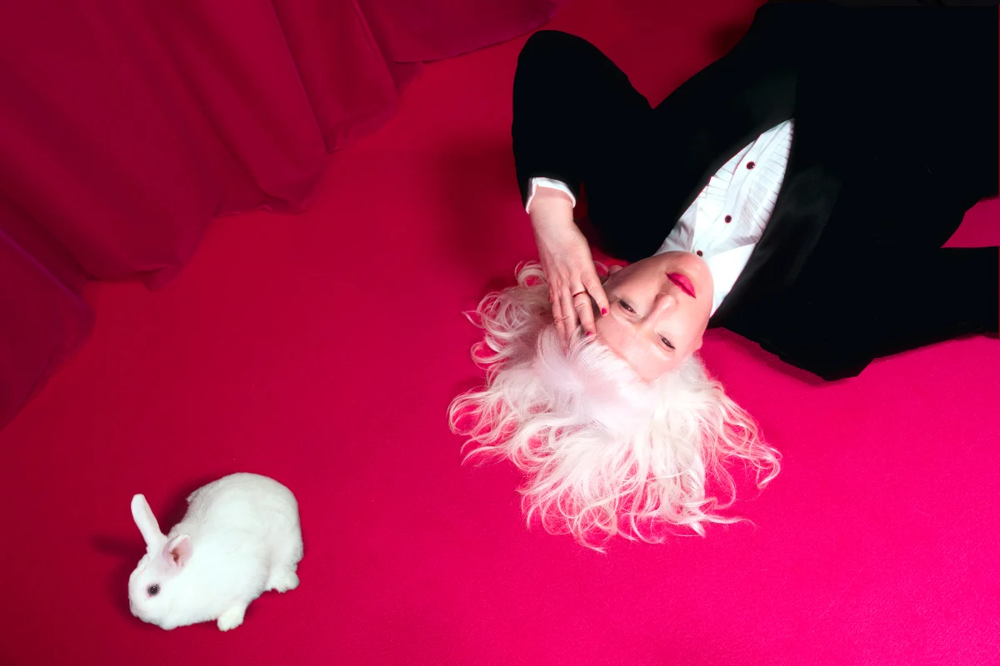

Fabric, a strategic dance development organisation based in the Midlands, is delighted to announce incredible performances this autumn, presented as part of THIS IS DANCE.
Now in its second year, THIS IS DANCE is a unique partnership which includes Fabric, Birmingham Hippodrome, Birmingham Repertory Theatre, Birmingham Royal Ballet, Midlands Arts Centre, Fierce Festival and Sampad Arts. The partners share an ambition to create more opportunity, supporting artists, and increasing engagement, making dance a vital part of Birmingham’s cultural identity.
With performances from 13 October through to 26 November, the latest programme brings together a local and international line-up of artists and companies from the UK, Italy, USA, Canada, Poland, the Netherlands, Germany and Benin. Fabric is also offering co-presented performances throughout the autumn season.
Photo Credits:
The Dirty Work: Image by Paul Samuel White
Weathering: Images by Kevin Monko and Angel Orrigi
Anatomy of Survival: Images by Camilla Greenwell
Graces: Images by Riccardo Panozzo and Pasquale Divicenzo
Photo Gallery
Weathering by Faye Driscoll at Midlands Arts Centre (MAC), Wed 14 Oct - Fri 16 Oct 2026.
The Dirty Work, a new solo performance by Jo Bannon at Patrick Studio, Birmingham Hippodrome, Sat 7 Nov 2026.
Silvia Gribaudi’s Graces at Patrick Studio, Birmingham Hippodrome, Fri 20 Nov 2026.
Anatomy of Survival a collaboration between award-winning playwright Vivienne Franzmann and choreographer and psychotherapist Frauke Requardt at Patrick Studio, Birmingham Hippodrome, Thu 26 Nov 2026.
For full details of the programme, visit